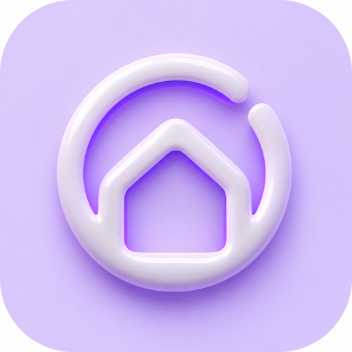

Подключение
Проверка ещё не запускалась- Связь со станциейНе проверена
- Доступ ADBНе проверен
- Права на станцииНе проверены
- Панель AliceKitНе проверена

AliceKit1 / 5 Ваша станция · ваш способ подключения
Ваша станция · ваш способ подключенияПроверим, что уже доступно, и пройдём только нужные шаги.
В режиме «Авто» сначала проверяется сохранённая панель. Явный порт проверяется по ADB, даже если панель уже работает.
Телефон и станция должны видеть друг друга в одной сети. VPN и гостевая Wi-Fi сеть могут мешать.
Обнаружение работает без root. Для установки нужен разрешённый канал отладки.
Если AliceBridge уже показывает рабочий ADB, переходите к проверке на первом шаге. Повторный сброс не нужен.
При первой настройке откройте AliceBridge, выберите именно «Станция Макс» и следуйте инструкции для её прошивки. Компьютер не требуется. Другие модели используют другие способы.
Для текущей версии AliceBridge нужен Android 12L+ и ARM64. Возможность получения доступа зависит от телефона и прошивки колонки.
Эти приложения запускают привилегированную службу на телефоне. Сами по себе они не получают root станции и не передают ключ AliceBridge в AliceKit. Для сетевого режима AliceBridge нужен Android 13+; совместимость хотспота и DNS зависит от телефона.
Наличие менеджера не подтверждает, что его служба запущена.
Shevery — другой менеджер с отдельным пакетом. Используйте его, если ваша версия AliceBridge поддерживает этот менеджер; проверяйте фактический запрос разрешения и запуск службы. Не удаляйте рабочий менеджер просто ради смены оформления.
Альтернативный путь запуска точки AliceBridge. В AliceBridge выберите установленный менеджер KernelSU и следуйте его проверке совместимости. При запросе выдайте суперпользователя именно AliceBridge в менеджере. Временный root телефона не равен постоянному root станции. После DFRoot следуйте требованию автора перезагрузить телефон.
Не запускайте DFRoot, если рабочая схема через Shizuku уже подключает колонку. При ошибке сохраните журнал AliceBridge — AliceKit не может прочитать закрытое хранилище другого приложения.
Установите Android Platform Tools. Получите ADB по инструкции для своей модели, затем проверьте доступ в терминале.
adb connect IP:5555
adb -s IP:5555 shell getprop ro.build.version.incrementalДля первичного root Max 0921 используется оригинальный Hybrid Root 1.2.4. На Windows его установщик запускают из Git Bash, на Linux/macOS — из терминала. Панель и архив установщика имеют отдельные задачи.
Один профиль, одна точная прошивка. Без подбора адресов ядра.
Встроенный установщик с телефона рассчитан только на Max · 5000000921 · Android 9 · ядро 4.9.113. На другой сборке запуск заблокирован.
Скачайте оригинальный station-max-hybrid-1.2.4.zip из сообщения автора, затем выберите его здесь. Все исполняемые файлы и скрипты сверяются с закреплёнными хешами.
Архив ещё не выбран
Эти адреса используются сетевой защитой самого Hybrid Root. Возьмите их из своей рабочей настройки. Адрес DNS — локальный сервер перехвата из гайда, а не публичный DNS.
Новый мобильный установщик: проверены архив и логика установки; первый запуск на нерутированной колонке этим мастером пока не проверен. Перед записью будет показано подтверждение. Аккаунты не сбрасываются. При ошибке повтор не запускается автоматически.
Подписанный комплект с общей страницы выпусков. Телефон выполняет работу установщика.
Агент управления, редактор LED и кольца, интерфейс ТВ и поддержка плагинов. Приложения и аккаунты сохраняются.
Нужно свободное место: комплект перед установкой проверит его автоматически.
После запуска откройте AliceKit на телевизоре: «Настройки → Подключить телефон».
Вернитесь к поиску станции и введите показанный код. Он действует пять минут. Ключи ADB и пароль Wi-Fi вводить в панель не нужно.
После подключения станция покажет улыбку. Для обычного управления AliceBridge, USB и компьютер больше не нужны.
Профиль root блокирует DNS-over-TLS по IPv6, чтобы DNS-правила не обходились. Остальной IPv6 не отключается.
Последние 200 событий хранятся на этом устройстве. Аудио, пароли и закрытые ключи не записываются. Локальные IP могут присутствовать. Журнал AliceBridge экспортируется отдельно из AliceBridge.
Root зависит от модели и сборки. Этот мастер не обещает доступ к любой станции и не изменяет неизвестные прошивки.